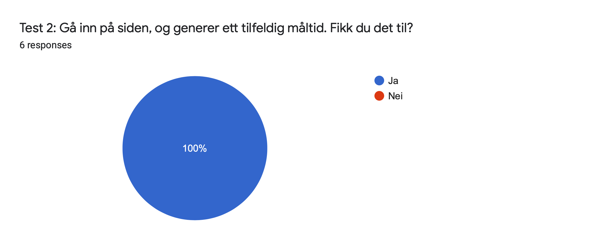

P4 Testing
Group 3
Solfrid Johansen, Emil Onsøyen and Ane Vigre Håland
Date: 9.11.2019
Administrative details
Client: Imaginary students
Website: DankMeals
Link to webpage: Click here
Testing Document
We created a Google Form survey, which can be found here.
General information: We asked the users what software and browser they use, to check for browser compatibility. This is to ensure that the webpage looks and functions as intended for most users.
Task 1: In this task, the user is asked to navigate to a recipe. This is to test whether the recipes, which represent the core of the webpage, are easily accessible. The tester is asked if they were able to complete the task, and whether they found it difficult.
Task 2: In this task, the user is asked to generate a random meal. This is to test whether the user can find and use this part of the webpage easily. The tester is asked if they were able to complete the task, and whether they found it difficult.
Task 3: In this task, the user is asked to navigate to the page where they can suggest a meal, fill out the form and submit it. This is to test whether the user can find this part of the webpage easily, and if they are able to fill out the form. The tester is asked if they were able to complete the task, and whether they found it difficult.
General questions The user is asked if they think the page is easy to navigate, and if they like the design. We also included a short-answer section for other comments in order to get additional feedback.
Tester Audience
We got 6 responses to our form, which was shared among friends. All the testers (100%) were students, which is our target group. Altough no data on the ages were collected, the people who answered the form are in the age range of 22 - 25 years.Testing Platform
Most of the users used MacOS, but we also got a reponse from a Windows user and a Linux user, as shown in Figure 1. We got no data from mobile devices, but as we have not created a mobile version, we do not see this as an issue. If we are to create a mobile version in the future, we will need to do more testing.Figure 1: Chart of different software on devices tested.
We were able to do live testing with one person, who is a student.In Figure 2, the chart of browsers in shown. Unfortunately we only got testers using Safari and Chrome. In the future, we should aim for testers using the other browsers as well.
Figure 2: Chart of browsers tested.
Feedback Summary
In Figure 3 and Figure 4 the feedback from Task 1 is shown. In Figure 4, 1 is "very easy" and 5 is "very difficult/were not able to complete task". This is also the scale in Figure 6 and Figure 8. As seen in Figure 3, all the testers were able to complete Task 1, and from Figure 3 one can see that all but one of the testers found this task to be very easy. We are very satisfied with this result, and it appears to be very easy to navigate to the recipes.

Figure 3: Chart of users ability to complete Task 1.
Figure 4: Plot of difficultiy of completing Task 1.
In Figure 5 and Figure 6 the feedback from Task 2 is shown. As seen in Figure 5, all testers were able to complete the task. In Figure 6, we see that this task was more difficult than task 1. It could be that the link in the navbar is a bit unclear (will get back to this in the live-testing section). Even though it was not as easy as Task 1, we are still satisfied by this result.
Figure 5: Chart of users ability to complete Task 2.
Figure 6: Plot of difficultiy of completing Task 2.
In Figure 7 and 8 the feedback from Task 3 is shown. In Figure 7 we see that all but one of the testers were able to complete the task. And in Figure 8 we see that this task was relatively difficult, compared to the other tasks. There is certainly room for improvement here, and in the future, design changes should be implimented to make this task easier.
Figure 7: Chart of users ability to complete Task 3.
Figure 8: Plot of difficultiy of completing Task 3.
In Figure 9, the responses on the design of the webpage is shown. Here, 1 means "Very ugly" and 5 means "Very good". We see that most users found the design to be good, but there is room for improvement.
Figure 9: Plot of responses on design
In Figure 10, the responses on the ease of navigation is shown. Here, 1 means "Very easy" and 5 means "very difficult/unable to navigate". We see that most of the respondants found it very easy to navigate, altough there is one outlier who found the navigation to be difficult. Since most of the testers found it very easy, we are mostly pleased with these result. The user who found it difficult commented in the last section "Det var litt vanskelig å finne siden hvor en skulle sende inn egen oppskrift, ellers veldig bra!". The related task (task 3) was the one where the testers struggled the most, so it appears that the navigation is good except when trying to locate the meal suggestion page. (We will get back to this later in the document).
Figure 10: Plot of responses on ease of navigation
The last section was a free-response section where we got three responses:
- Det var litt vanskelig å finne siden hvor en skulle sende inn egen oppskrift, ellers veldig bra!
- Vanskelig å finne skjemaet til å foreslå egen oppskrift. Kanskje dere kan legge det øverst og kalle det for "suggest a recipe" eller noe sånt.
- Litt stor font på meny-linjen, ellers nydelig!
Live Testing
We did live testing with one person, who is a student. We observed that he navigated the page with ease, but some issues were found.
He first started typing in a meal to suggest in the contact form, not the suggestion form as he didn't think there was a difference between these. He found it difficult to understand that the "try-your-luck" page was where one generates a meal. We have added a fake search bar to the navbar, which is something we included as a future functionality. However, our tester was confused by this, and tried entering many different quieries thinking his search word was incorrect. He also thought it was strange that the portion size could go all the way up to 99, and that eggs could be stated as 0.5 egg as an ingredient. After the testing he commented that he thought the design was simple and clear, and that the page was easy to navigate. He also missed having a feature where one could make comments under the recipes in order to share each other's experiences with the meal.Response to Feedback
We got mostly positive feedback on the design, but in the future we could make several mockups of design suggestions and then do testing on the given design options in order to decide which one is best suited for our audience.
It appears that the two main issues with the webpage is the navigation to the meal generator and the suggestion form. This is also what we wanted to test, as we were unsure whether out solution was good enough. The meal generator, which we named "try-your-luck", should be changed to "Generate Meal" or something more descriptive in the navigation bar in the future. The other issue, the suggestion form, should be made more easily accessible. We could add a dircet link to the page to the navbar, or instead of having the contact form on the "contact.html" page, we could have the html show one link to the contact form (for general queries), and one to the suggestion form. This way, the user would know which form is to be used for what purpose.
As the search bar was found to be confusing, we should completely implement this future in the future, remove the search bar, or make the page it goes to afterwards (search.html) more clear that this functionality currently does not work.
Another point from our live tester was some issues with ingredients calculation. We should limit the maximum number of portions, to e.g. 20, so that if the users enters a number larger than this, it gets stuck on 20. This way, unrealistically big portions (for most people) will not appear.
We can also make it so that ingredients that only make sense as whole items, like eggs, get rounded up. However, this is probably something that we would not implement, as some recipes are made for e.g. four people so changing it to 5 would not necessarily give a whole other of the ingredient. The specific recipe our tester mentioned (eggs and bacon) should be changed however, as it makes more sense to have one egg per person.
Altough several changes are needed, due to time constraints we decided not to implement any of them.
Self-Reflection
As we lost two group members late in the project, we had to spend a lot of additional time on it in order to compensate for this. We did remove some (very little) of the initially intended content as a result, but we don't feel that it affected the webpage as a whole. It was a bit of a struggle to adjust to this siginificantly increased workload, however we did manage to finish the project on time.
We spent a lot of time to make the webpage responsive, and the navigation bar took a lot of time to get right for small pages. At first we didn't think we could do it, but after trying different methods, we eventually figured it out! We all found the most fun part of the project to be making the JS functions, which was different from e.g. basic Python programming where we only print results.
Overall, we have enjoyed the course. It's been well organized with clear expectations of us as students, which is highly appreciated.